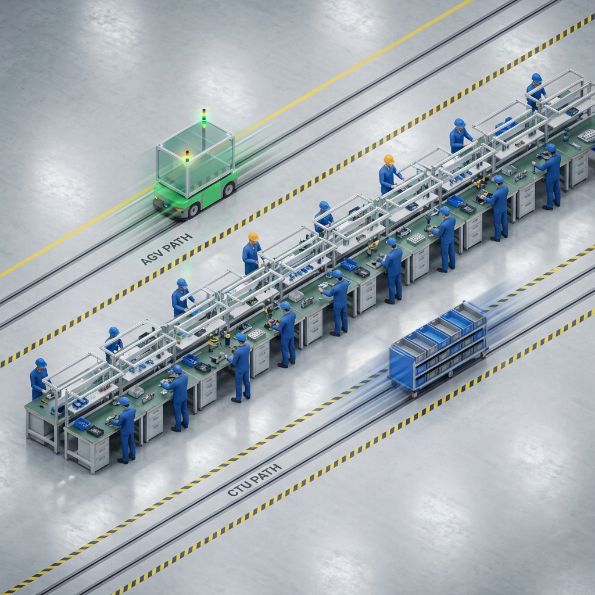

Mục tiêu: Giảm diện tích, tích hợp AGV (mặt trước) và CTU (mặt sau).
Thay đổi số lượng máy để xem các layout tự động co giãn kích thước.
So sánh hiệu quả quãng đường di chuyển của CTU khi cấp hàng cho nhiều line cùng lúc.
Các phương pháp vận chuyển nội bộ nhà máy phổ biến:
Xuất phát từ ngành giao sữa đầu thế kỷ 20. Người giao sữa đi theo tuyến cố định, vừa giao sữa tươi vừa thu chai rỗng. Số chai rỗng là tín hiệu nhu cầu ngày hôm sau.
Một xe đi theo tuyến đường định sẵn, dừng tại nhiều điểm để nhận/giao hàng trong cùng một chuyến. Thay thế việc mỗi nhà cung cấp giao riêng lẻ.
Xe đi theo vòng: Kho → S1 → S2 → S3 → S4 → Kho
Phương pháp cơ bản nhất, xuất hiện từ khi có AGV đời đầu. Xe được lệnh đi thẳng từ điểm A đến điểm B.
Mỗi chuyến chỉ phục vụ 1 điểm. Xe nhận hàng từ Kho → Giao đến 1 Trạm → Quay về Kho (thường không tải). Dùng thuật toán như Dijkstra, A* để tìm đường ngắn nhất.
Mỗi trạm = 1 chuyến riêng. Nét đứt = lượt về không tải.
Phổ biến với hệ thống AGV đường dây dẫn (wire-guided) hoặc băng từ. Xe chỉ chạy theo 1 đường cố định, không cần cảm biến phức tạp.
Tất cả xe chạy trên 1 đường vòng khép kín, thường là một chiều. Dừng tại các trạm theo lịch trình hoặc khi có tín hiệu.
Xe chạy 1 chiều trên vòng kín. Layout 4, 5, 6 trong mô phỏng dùng kiểu này.
Được Toyota phát triển trong những năm 1950 như một phần của Toyota Production System (TPS). "Kanban" tiếng Nhật có nghĩa là "bảng hiệu".
Hệ thống "kéo" (Pull): Chỉ bổ sung khi có tín hiệu tiêu thụ (thẻ Kanban, thùng rỗng...). Kết hợp với Milk Run để tối ưu vận chuyển. Mô phỏng của chúng ta sử dụng nguyên lý này: CTU chạy khi có yêu cầu từ trạm.
Khi thùng rỗng → Gửi tín hiệu → Kho mới bổ sung.
💡 Mẹo: Trong thực tế, các nhà máy thường kết hợp nhiều phương pháp. Ví dụ: Milk Run + Kanban là sự kết hợp phổ biến nhất để vừa tiết kiệm chi phí vừa đảm bảo JIT.

Hình ảnh minh họa ý tưởng layout trong thực tế